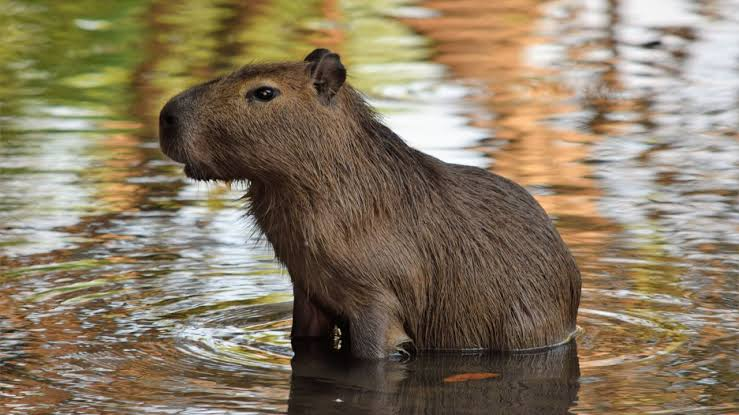
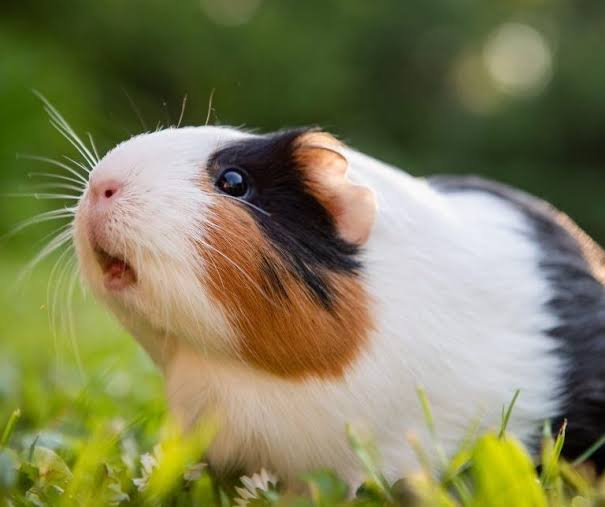

The capybara or greater capybara (Hydrochoerus hydrochaeris) is a giant cavy rodent native to South America. It is the largest living rodent and a member of the genus Hydrochoerus. The only other extant member is the lesser capybara (Hydrochoerus isthmius). Its close relatives include guinea pigs and rock cavies, and it is more distantly related to the agouti, the chinchilla, and the nutria. The capybara inhabits savannas and dense forests, and lives near bodies of water. It is a highly social species and can be found in groups as large as 100 individuals, but usually live in groups of 10-20 individuals. The capybara is hunted for its meat and hide and also for grease from its thick fatty skin.
The guinea pig or domestic guinea pig (Cavia porcellus), also known as the cavy or domestic cavy, is a species of rodent belonging to the genus Cavia in the family Caviidae. Breeders tend to use the name "cavy" for the animal, but "guinea pig" is more commonly used in scientific and laboratory contexts. Despite their name, guinea pigs are not native to Guinea, nor are they closely related to pigs. They originated in the Andes region of South America. Studies based on biochemistry and hybridization suggest they are domesticated animals that do not exist naturally in the wild, descendants of a closely related cavy species such as C. tschudii. They were originally domesticated as livestock for a source of meat, and are still consumed in some parts of the world. 